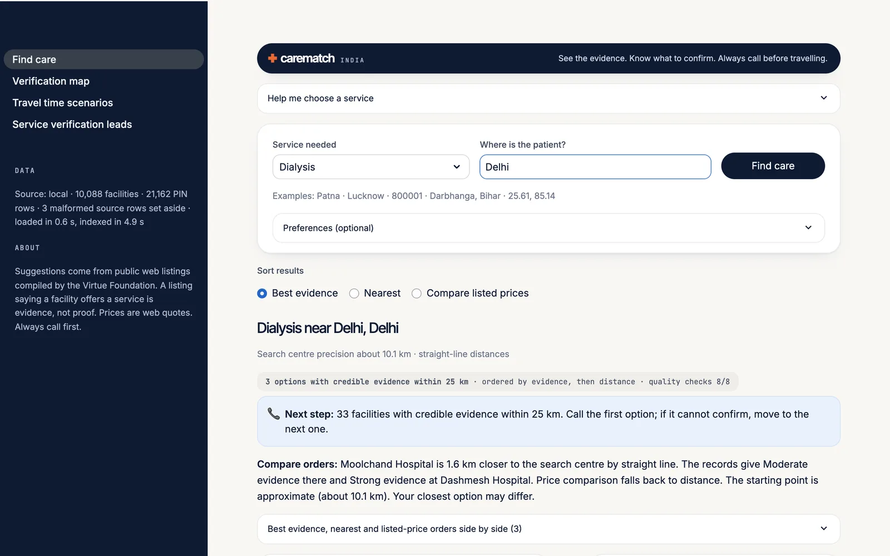

CMU × Databricks Datathon · Nov 2026
CareMatch
Finds healthcare facilities in India from 10,088 web-extracted records and quotes the sentence each suggestion rests on. A claim-level text classifier, a positive-unlabeled model and a maximum-coverage optimizer tell NGO planners whom to call first. Built in a team of two.